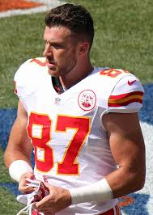
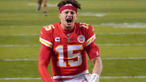

Super Bowl LV
What is the Super Bowl?: Biggest game of the year for the professional football organization, the NFL.
When does the Super Bowl usually take place?: The Super Bowl is played at the end of the playoffs and usually ends on the first or second sunday in February.
When does the Super Bowl take place this year?: year the Super Bowl is taking place on February 7, 2021.
Who is playing in this year's Super Bowl?: The Kansas City Chiefs are playing the Tampa Bay Buccanners in Tampa Bay, Florida.
Kansas City Chiefs
The Kansas City Chiefs are an NFL organization that is headquarters in Kansas City, Missouri.
The organization was founded originally as the Dallas Texans in 1960, but relocated to the Kansas City in 1963.
The Chiefs were able to obtain their first Super Bowl win and Lombardi trophy in 2020. They faced the San Francisco 49ers.
| Patrick Mahomes |
- Quarterback, #15
- Drafted in 2017
|
|
| Clyde Edwards-Helaire |
- Running Back, #25
- Drafted in 2021
|
|
| Travis Kelce |
- Tight End, #87
- Drafted in 2013
|
 |
| Tyreek Hill |
- Wide Receiver, #10
- Drafted in 2016
|
|
| Sammy Watkins |
- Wide Receiver, #14
- Drafted in 2014
|
|
| Chris Jones |
- Defensive Tackle, #95
- Drafted in 2016
|
|
| Tyrann Mathieu |
- Safety, #32
- Drafted in 2013
|
|
For more information on the Kansas City Chiefs, click here.
Patrick Mahomes
- Patrick Mahomes is regarded as the most talented young quarterback in most recent history.
- He grew up in Tyler, Texas.
- His dad was a professional baseball in the MLB at the Minnesota Twins, Boston Red Sox, New York Mets, Pittsburgh Pirates, Texas Rangers, and Chicago Cubs.
- He would go on to play quarterback in the Big 12 at Texas Tech University.
- He was actually drafted in the 2014 MLB draft by the Detroit Tigers at 1120th overall in the 37th round.
- He was drafted in the 1st round at 10th overall by the Kansas City Chiefs.
- He has the possibility of being one of the greatest(if not the greatest) quarterbacks in NFL history.

For more information on the Kansas City Chiefs, click here.
Tampa Bay Buccaneers
The Tampa Bay Buccaneers are an NFL organization that is headquarters in Tampa Bay, Florida.
The organization was established in 1976. They have stayed as the Tampa Bay Buccaneers since their establization.
Tampa Bay was able to secure their first Lombardi trophy in 2003, when they were able to destroy the Oakland Raiders.
| Tom Brady |
- Quarterback, #12
- Drafted in 2000,
199th overall in the
6th round.
|
|
| Mike Evans |
- Wide Receiver, #13
- Drafted in 2014, 7th overall in the 1st round.
|
|
| Ronald Jones Jr. |
- Running Back, #27
- Drafted in 2018, 38th overall in the 2nd round.
|
|
| Chris Godwin |
- Wide Receiver, #14
- Drafted in 2017, 84th overall in the 3rd round.
|
|
| Jason Pierre-Paul |
Outside Linebacker, #90 |
|
| Devin White |
Linebacker, #45 |
|
For more information on the Tampa Bay Buccaneers, click here.
Tom Brady
- Tom Brady is regarded as the greatest quarterback in NFL history.
- He grew up in San Mateo, California.
- He played in the BIG 10 at the University of Michigan.
- He was drafted at 199th overall in the 6th round of the 2000 NFL Draft.
- He will appear in his 10th super bowl.
- He has 6 super bowl rings.
- He is currently trying to make history by being the first team to win a Super Bowl at their home stadium.
Tom Brady's Rings
- Super Bowl XXXVI against the St. Louis Rams
- Super Bowl XXXVII against the Carolina Panthers
- Super Bowl XXXIX against the Philedaphia Eagles
- Super Bowl XLIX against the Seattle Seahawks
- Super Bowl LI against the Atlanta Falcons
- Super Bowl LIII against the Los Angeles Rams